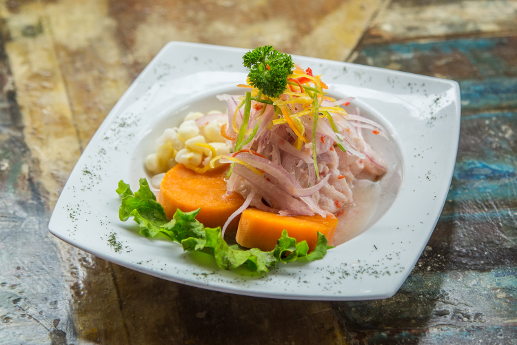
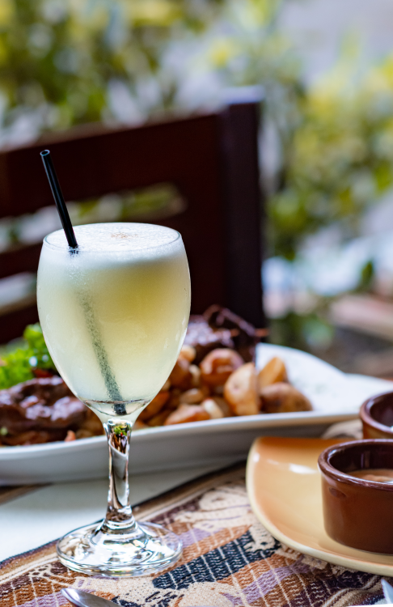

食事
ペルーは水産大国であり、特にリマなどの沿岸の都市では魚介類を使った料理が多くあります。
また、アンデスの山岳地帯ではジャガイモや野菜のスープ系のものや、マス料理、クイ（テンジクネズミ）を使った料理があります。肉は鶏肉、牛肉がよく食べられていますが、近年はアルパカの肉を出すレストランもあります。
- セビーチェ Cebiche
- ロモ・サルタード Lomo Saltado
- アヒ・デ・ガジーナ Ají de gallina
- アンティクーチョ Anticucho
- コカ茶 Mate de Coca
- ピスコサワー Pisco Sour
- インカコーラ INCA KOLA
セビーチェはペルーを起源とする料理で、ラテンアメリカでよく食べれています。白身魚やタコ、エビ、イカ、貝などの魚介類をレモン汁で締め、トウガラシや玉ねぎであえた、マリネのような料理です。黄色い豆のようなものはチョクロ(Choclo)という粒の大きなペルーのトウモロコシで、オレンジ色の人参のように見えるものはカモーテ(Camote)というペルーのサツマイモです。これらはセビーチェの付け合わせに欠かせません。

牛肉の細切りと、玉ねぎ、トマト、フライドポテトを炒めたペルーの国民食で、中華料理のような味付けです。中国からの移民がルーツとされています。
ガジーナ（雌鶏）をほぐしたものと、玉ねぎ、牛乳に浸したパンをアヒ・アマリージョ（黄色い唐辛子）のクリームソースで煮込んだ料理です。ご飯にかけて食べるので、シチューやカレーライスに似ています。
牛の心臓（ハツ）を串に刺したものを香辛料の効いたたれに漬け込んで焼いた料理で、ペルーが起源とされています。アンティクーチョも付け合わせにチョクロやカモーテがついてくることが多いです。
インカの時代から飲まれていたコカ茶は、コカインの原料となるコカの葉を乾燥させたものにお湯を注いだものです。高山病に効くとされています。
ピスコとは葡萄から作られた蒸留酒のことで、このピスコに卵白とレモン、砂糖を加えたカクテルがピスコサワーです。

インカコーラはペルーのJosé R. Lindley社が発売しているコーラで、ペルーを代表する炭酸飲料です。甘味が強くクセになる味だそうです。